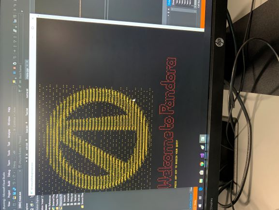
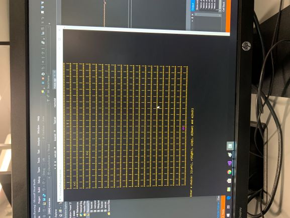
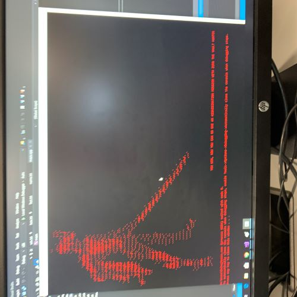
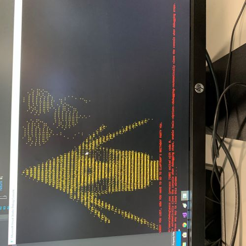
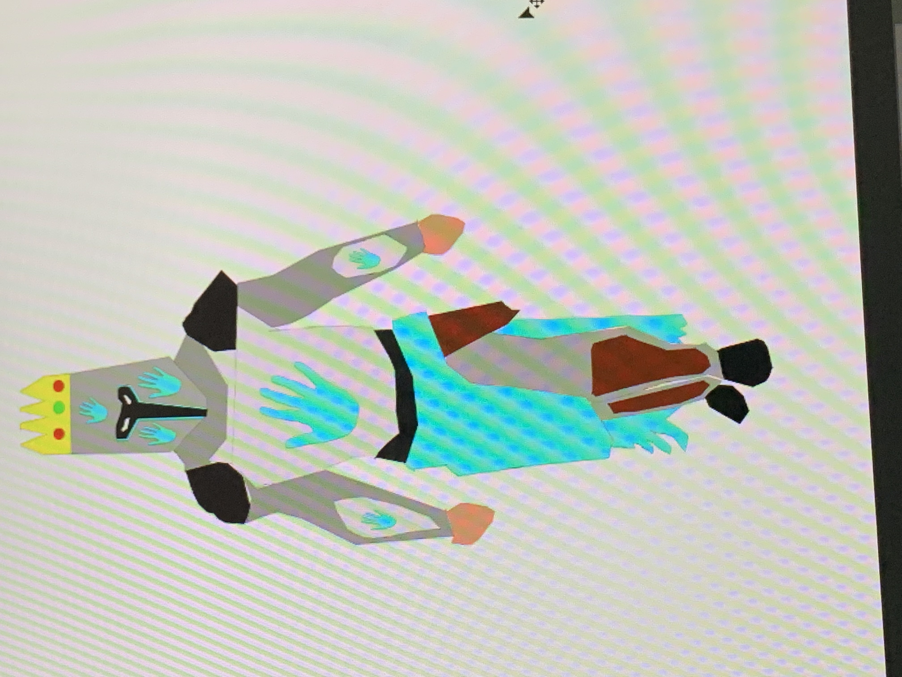

Projects
   {kind=link}
{kind=link}
{kind=link}
{kind=link}
About Project
This is one of my first games in C++ and it is a maze game with a video game theme of a game called Borderlands 2(one of my favorite games).
• The first image is the welcome screen and that is the thing you will see when you open up the game for the first time.
•The second image is the game page and it is a maze where you have to get pass two enemies. You have to use your WSDA keys to move around from each square and all you have to do is get to the w at the end of the page which is at the top of the page.
• The third image is the winning screen and you get this buy making it to the w at the end of the game. And this is the winning screen because you are going on an assassin mission with zero and that’s cool.
• The last image is the losing screen and you get this screen when you hit on of the monster in the game. And it is the losing screen because you have to spend your whole day with Claptrap and its his birthday too.
More Projects
• This is a Knight I made out of shapes in photoshop in a game desgin class in high school.